철도토목산업기사 (2010-05-09 기출문제)
1과목: 철도공학
1. 철도의 설비를 구분할 때 안전, 신속 그리고 정확한 열차의 운행을 확보하기 위한 보안설비로 거리가 먼 것은?
- 연동장치
- 무선전화
- 폐색장치
- 궤도회로
(정답률: 알수없음)

2. 장대레일 궤도에서 설정온도 보다 40℃의 온도상승이 생기면 부동구간에 생기는 축압력은? (단, 레일의 단면적 = 64cm2. 레일의 탄성계수 = 2.1x 106 kg/cm2, 레일의 선팽창계수 = 1.14x10-5/°C)
- 38.3ton
- 53.8ton
- 61.3ton
- 95.7ton
(정답률: 알수없음)
3. 험프 조차장에서 분해 작업을 할 경우에 인상선에 상당하는 것이 험프에 향하여 오르막으로 되는 화차조차장의 선군(track group)은?
- 도착선
- 분별선
- 압상선
- 수수선
(정답률: 알수없음)
4. 레일에 대한 설명으로 옳은 것은?
- 1000m 이상의 레일을 장대 레일이라 한다.
- 25m보다 길고 200m미만 레일을 장척 레일이라 한다.
- 한국은 30m를 정척 레일이라 한다.
- 레일의 무게는 100m 길이의 무게를 말한다.
(정답률: 알수없음)
5. 폐색구간 시정에 설치되는 자동폐색신호기가 정지신호로 현시 하여야 할 상황이 아닌 것은?
- 폐색구간에 열차 또는 차량이 있을 때
- 장치가 고장이 났을 때
- 폐색구간의 전철기가 정당한 방향에 있지 아니 할 때
- 폐색구간 종점신호기의 현시 상태가 주의신호일 때
(정답률: 알수없음)
6. 보선작업의 기계화를 추진하기 위하여 배려하여야 할 사항과 거리가 먼 것은?
- 보수시간의 확보
- 경제성 확보를 위한 보선 주기의 장기화
- 보수기지, 보수통로의 정비
- 보수작업조건에 적합한 기계의 개량, 개발
(정답률: 알수없음)
7. 목침목의 방부처리 방법이 아닌 것은?
- 베셀법
- 로오리법
- 뉴튼법
- 류우핑법
(정답률: 알수없음)
8. 일반적인 도상용 자갈치기 기계작업 순서로서 알맞게 나열되어 있는 것은?
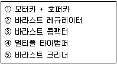
- ①-②-③-④-⑤
- ①-②-④-③-⑤
- ⑤-①-②-④-③
- ⑤-①-②-③-④
(정답률: 알수없음)
9. 다음 용접방법중 공장에서 가장 대규모로 작업하기에 적절한 방법은?
- 엔크로즈드아크용접
- 가스압접용접
- 플레시벗트용점
- 테르밋트용접
(정답률: 알수없음)
10. 포인트는 전환기에 의하여 임의방향으로 진로를 개통시킬 수 있으나 대체로 운전 횟수가 많은 방향이 정위가 되는데 정위의 선정 표준이 옳지 않은 것은?
- 본선 상호 간에는 중요한 방향
- 본선, 안전측선 상호 간에는 본선방향
- 측선 상호 간에는 중요한 방향
- 본선과 측선에서는 본선의 방향
(정답률: 알수없음)
11. 침목배치수가 10m당 17개이고 침목 1개의 저항력이 1000kg일 때 도상종저항력은?
- 850kg
- 8500kg
- 850kg/m
- 8500kg/m
(정답률: 알수없음)
12. 철도신호와 관련하여 종사자 상호간의 의사전달을 위한 의사표시를 무엇이라 하는가?
- 신호
- 전호
- 표지
- 현시
(정답률: 알수없음)
13. 콘크리트 침목의 특징에 관한 설명으로 옳지 않은 것은?
- 레일 체결이 복잡하다.
- 균열발생의 염려가 크다.
- 전기절연성이 목침목보다 좋다.
- 충격력에 약하고 탄성이 부족하다.
(정답률: 알수없음)
14. 다음 중 상치신호기에 해당되는 것은?
- 유도신호기
- 서행예고신호기
- 서행신호기
- 서행해제신호기
(정답률: 알수없음)
15. 고속철도전용선인 경우 설계시 적용하여야 할 표준하중은?
- L-18
- HL-25
- EL-22
- EL-18
(정답률: 알수없음)
16. 일반철도에서 곡선반경 600m, 통과속도 80km/h일 때 균형(설정) 캔트량은?
- 116mm
- 136mm
- 126mm
- 106mm
(정답률: 알수없음)
17. 레일의 복진이 비교적 많이 발생하는 장소에 대한 설명으로 옳지 않은 것은?
- 열차의 제동회수가 적은 곳
- 열차의 방향이 일정한 복선구간
- 분기부와 곡선부
- 급한 하향기울기
(정답률: 알수없음)
18. 분기기의 통과속도를 일반궤도보다 낮게 제한하는 이유는 일반궤도에 비해 구조적인 약점이 있기 때문이다. 이러한 약점에 해당되지 않는 것은?
- 분기기의 슬랙과 리드 곡선반경이 크다.
- 텅레일의 단면적이 작고 견고하게 체결될 수 없다.
- 캔트가 부족하다.
- 크로싱에 결선부가 있다.
(정답률: 알수없음)
19. 정거장을 본선로의 구내배선에 의해 분류한 것에 대한 설명으로 옳지 않은 것은?
- 두단식 정거장(stub station)은 착발본선이 막힌 종단형으로 된 정거장을 말하며 정거장의 주요 건조물은 선로의 종단쪽에 설치된다.
- 관통식 정거장(through station)은 착발본선이 정거장을 관통한 것으로 주요건조물은 선로의 측방향에 설치되며 고가선구간에서는 선로의 하부측에 또 깎기 구간에서는 선로상부측에 설치하는 경우도 있다.
- 절선식 정거장(switch back station)은 산악 등 급기울기선이 연속되어 정거장을 설치할만한 완만한 기울기를 얻지 못할 때에는 수평 또는 완만한 기울기의 선로를 본선에서 분기시켜 정거장을 설치한다.
- 반환식 정거장(reverse station)은 본선로의 사이에 승강장과 정거장 본건물을 설치하여 지하도 또는 과선교에 의해 외부와 연결하는 것이 있으나 직통정거장의 변형에는 좋지 않다.
(정답률: 알수없음)
20. 선로용량을 크게 할 수 있는 경우가 아닌 것은?
- 교행대피시설을 축소한다.
- 열차의 속도를 높인다.
- 열차의 종별을 단순화 한다.
- 폐색구간을 단축(신호기 간격 조정)한다.
(정답률: 알수없음)
2과목: 측량학
21. 완화곡선설치에 관한 설명으로 옳지 않은 것은?
- 완화곡선의 반지름은 무한대로부터 시작하여 점차 감소되고 소요의 원곡선에 연결된다.
- 완화곡선의 접선은 시점에서 직선에 접하고 종점에서 원호에 접한다.
- 완화곡선의 시점에서 캔트는 0 이고 소요의 원곡선에 도달하면 어느 높이에 달한다.
- 완화곡선의 곡률은 곡선의 어느 부분에서도 그 값이 같다.
(정답률: 알수없음)
22. 다음과 같은 지형도에서 저수지(빗금친 부분)의 집수면적을 나타내는 경계선으로 가장 적합한 것은?
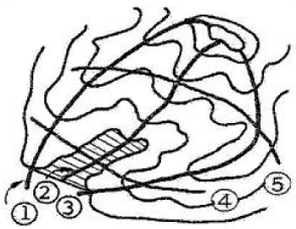
- ①과 ②사이
- ①과 ③사이
- ②와 ③사이
- ④와 ⑤사이
(정답률: 알수없음)
23. 하천의 수심 및 유수부분의 하저상황을 조사하고 횡단면도를 제작하는 측량은?
- 평면측량
- 심천측량
- 수준측량
- 유량측량
(정답률: 알수없음)
24. 그림의 등고선에서 AB의 수평거리가 50m일 때 AB의 기울기는 얼마인가?
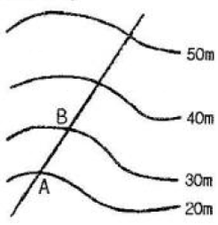
- 10%
- 20%
- 50%
- 60%
(정답률: 알수없음)
25. 어떤 거리를 같은 조건으로 5회 측정하여 다음과 같은 결과를 얻었다. 이 관측값의 최확값은 얼마인가?
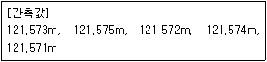
- 121.572m
- 121.573m
- 121.574m
- 121.575m
(정답률: 알수없음)
26. 수준측량의 야장 기입법 중 중간점(I.P)이 많을 경우 가장 편리한 방법은?
- 승강식
- 횡단식
- 고차식
- 기고식
(정답률: 알수없음)
27. 다각측량에서 거리의 총합이 1250ml일 때 폐합오차를 0.26m로 하려고 한다. 위거 또는 경거의 오차를 얼마로 하여야 하는가? (단, 위거 및 경거오차는 같은 것으로 가정한다.)
- 0.13m
- 0.18m
- 0.26m
- 0.52m
(정답률: 알수없음)
28. 직사각형 토지의 가로, 세로 길이를 측정하여 60.50m와 48.50m를 얻었다. 길이의 측정값에 ± 1cm의 오차가 있었다면 면적에서의 오차는?
- ±0.6m2
- ±0.8m2
- ±1.0m2
- ±1.2m2
(정답률: 알수없음)
29. 그링과 같이 △ABC의 토지를 한번 BC에 평행한 DE로 분할하여 면적의 비율이 ADE:BCED = 2:3이 되게 하려고 한다. AD의 길이를 얼마로 하면 되는가? (단, AB의 길이는 50m 임)
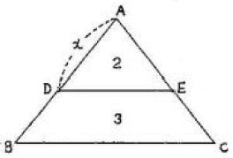
- 32.52m
- 31.62m
- 30m
- 20m
(정답률: 알수없음)
30. 도로설계에 있어서 설계속도가 2배가 되면 캔트(cant)의 크기는 몇 배가 되어야 하는가?
- 1.4배
- 2배
- 3배
- 4배
(정답률: 알수없음)
31. 노선측량에서 교각 60° 외할(E) 20m 일때 곡선반지름(R)은 얼마인가?
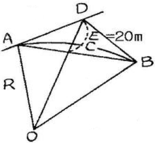
- 129.3m
- 157.7m
- 220.0m
- 223.0m
(정답률: 알수없음)
32. 축척 1:1200 지도에서 도상면적을 잘못하여 축척 1:1000인 면적으로 계산하여 15000m2를 얻었다. 실제면적은?
- 10417m2
- 12500m2
- 18000m2
- 21600m2
(정답률: 알수없음)
33. 카메라 초점거리가 150mm이고, 축적이 1:50000 일 때 도화기 C계수가 1000 이라면 도화기의 최소 등고선간격은?
- 5.2m
- 7.5m
- 8.3m
- 9.6m
(정답률: 알수없음)
34. 항공사진의 중복도에 대한 설명으로 옳지 않은 것은?
- 종중복은 동일 촬영경로에서 최소한 40% 이상을 중복한다.
- 종중복도는 입체시를 위하여 일반적으로 60% 중복한다
- 촬영 경로사이의 횡중복은 최소 5%이며 일반적으로 30%를 중복한다.
- 산악지역이나 시가지 지역은 10~20% 중복도를 높여 촬영한다.
(정답률: 알수없음)
35. 노선측량에서 노선 기정으로부터 곡선 시점까지의 추가거리가 2315.25m이다. 교각이 60°, 곡률반지름이 200m 라면 노선 기점으로부터 곡선의 종점까지의 총거리는?
- 1867.81m
- 21⑤.81m
- 2199.69m
- 2524.69m
(정답률: 알수없음)
36. 직접고저측량을 하여 그림과 같은 결과를 얻었다. 이 때 B점의 표고는? (단, A점의 표고는 100m 이고 단위는 [m]이다.)
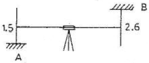
- 101.1m
- 101.5m
- 104.1m
- 1⑤.2m
(정답률: 알수없음)
37. 삼각측량에 대한 설명 중 옳지 않은 것은?
- 정밀도가 큰 것이 1등 삼각망이다.
- 조건식이 많아 계산 및 조정 방법이 복잡하다.
- 삼각망 계산에서 기준이 되는 최초의 변장은 검기선이다.
- 삼각점을 선정할 때 계속해서 연결되는 작업에 편리하도록 선점에 고려해야 한다.
(정답률: 알수없음)
38. 다음 중 중력보정방법이 아닌 것은?
- 지형보정
- 경도보정
- 부게보정
- 고도보정
(정답률: 알수없음)
39. 삼각측량에서 삼각망을 구성하는 형상으로 가장 이상적인 것은?
- 직각 삼각형
- 2등변 삼각형
- 정 상각형
- 둔각 삼각형
(정답률: 알수없음)
40. 평면직각좌표에서 A점의 좌표 XA=74.544m, YA=36.654m이고 B점의 좌표 XB=-52.271m, YB=-81,265m일 때 AB선의 방위각은?
- 42° 55` 06“
- 47° 04‘ 54“
- 222° 55‘ 06“
- 227° 04‘ 54“
(정답률: 알수없음)
3과목: 응용역학
41. 아래 그림과 같은 캔틸레버 보에서 C점의 횡모멘트는?
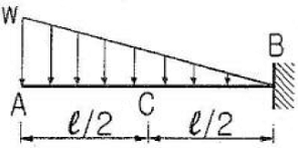
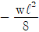
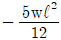
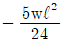
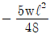
(정답률: 알수없음)
42. 다음 그림과 같은 I형 단연에 전단력 V=15 ton 이 작용할 경우 최대전단응력은 얼마인가?
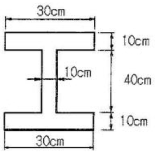
- 18.62 kg/cm2
- 25.25 kq/cm2
- 32.88 kg/cm2
- 44.33 kg/cm2
(정답률: 알수없음)
43. 그림과 같은 3힌지 라멘에 등분포 하중이 작용할 경우 A점의 수평반력은?
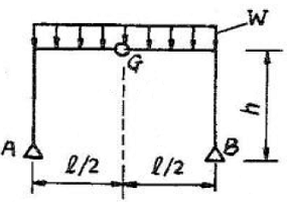
- 0
- wℓ2/8 (→)
- wℓ2/4h (→)
- wℓ2/8h (→)
(정답률: 알수없음)
44. 횡모멘트 M을 받는 보에 생기는 탄성 변형에너지를 옳게 표시한 것은? (단, 횡강성은 EI 이고, A는 단면적 이다.)
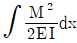
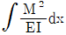
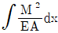
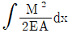
(정답률: 알수없음)
45. 그림과 같이 단순보에 하중 P가 경사지게 작용할 때 A점에서의 수직반력 VA를 구하면?
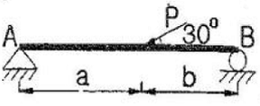
- Pb/(a+b)
- Pa/2(a+b)
- Pa/(a+b)
- Pb/2(a+b)
(정답률: 알수없음)
46. 그림과 같이 양단 고정인 기둥의 좌굴응력을 오일러(Euler)의 공식에 의하여 계산한 값은? (단, 기둥단면은 그림과 같으며 E=4.0x105kg/cm2)
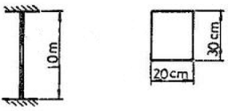
- 635 kg/cm2
- 458 kg/cm2
- 783 ka/cm2
- 526 kg/cm2
(정답률: 알수없음)
47. 그림과 같은 정정트러스에 있어서 a 부재에 일어나는 부재내력은?
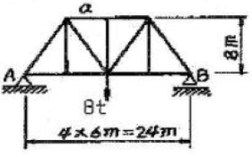
- 6 t (압축)
- 5 t (인장)
- 4 t (압축)
- 3 t (인장)
(정답률: 알수없음)
48. 편심축하중을 받는 다음 기둥에서 B점의 응력을 구한 값은? (단, 기둥 단면의 지름 d=20cm, 편심거리 e=7.5cm, 편심하중 P=20t이다.)
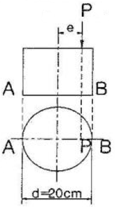
- 131.84kg/cm2
- 254.65kg/cm2
- 357.47kg/cm2
- 426.91kg/cm2
(정답률: 알수없음)
49. 그림과 같은 연속보에서 B점의 지정 반력은?
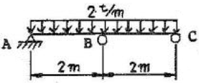
- 5 t
- 2.67 t
- 1.5 t
- 1 t
(정답률: 알수없음)
50. 직경 D인 원형 단면의 단면계수는?
- πD3/16
- πD/16
- πD/32
- πD3/32
(정답률: 알수없음)
51. 경간 ℓ=8m. 단면 30x40cm 되는 단순보의 중앙에 10t 되는 집중하중이 작용할 때 최대 횡응력은?
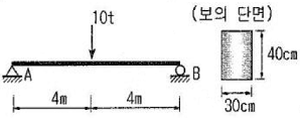
- 200 kg/cm2
- 250 kg/cm2
- 300 ka/cm2
- 350 kg/cm2
(정답률: 알수없음)
52. 다음 단순보의 지점 A에 모멘트 Ma가 작용할 경우 A점과 B점의 처짐각 비(θa/θb)는?
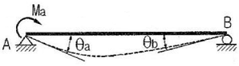
- 1.5
- 2.0
- 2.5
- 3.0
(정답률: 알수없음)
53. 지룡 2cm의 강철봉을 8ton의 힘으로 인장할 때 봉의 지름이 가늘어진 양은? (단, 포아송 비 v=0.3, 탄성계수 E=2x106kg/cm2)
- 0.00076 mm
- 0.0076 mm
- 0.042 mm
- 0.42 mm
(정답률: 알수없음)
54. 그림과 같이 부재의 자유단이 옆의 벽과 1mm 떨어져 있다. 부재의 온도가 현재보다 20°C 상승할 때, 부재 내에 생기는 열응력의 크기는? (단, E=20000kg/cm2. 10-5/℃ 이다.)
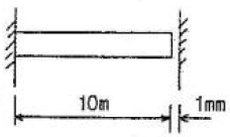
- 1kg/cm2
- 2kg/cm2
- 3kg/cm2
- 4kg/cm2
(정답률: 알수없음)
55. 다음 중 전달율을 이용하여 부정정 구조물을 풀이하는 방법은?
- 처짐각법
- 모멘트 분배법
- 변형일치법
- 3연 모멘트법
(정답률: 알수없음)
56. 그림과 같은 보에서 C점의 처짐을 구하면? (단. EI = 2x109kg·cm2이다.)
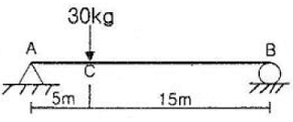
- 0.821 cm
- 1.406 cm
- 1,641 cm
- 2.812 cm
(정답률: 알수없음)
57. 그림과 같은 4분 원호에서 x축에 대한 단면 1차 모멘트의 크기는?
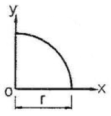
- r3/2
- r3/3
- r3/4
- r3/5
(정답률: 알수없음)
58. 아래 그림과 같은 로우프에서 BC에 일어나는 힘의 크기는? (단, 인장: +. 압축: -)
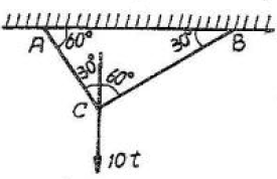
- 6.928t
- -6.928t
- -5t
- 5t
(정답률: 알수없음)
59. 아래 그림과 같은 라엔구조의 부정정 차수는 얼마인가?
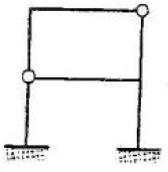
- 2차
- 3차
- 4차
- 5차
(정답률: 알수없음)
60. 그림과 같은 게르버보의 A점의 전단력으로 맞는 것은?
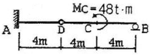
- 4t
- 6t
- 12t
- 24t
(정답률: 알수없음)
4과목: 건설재료 및 시공
61. 다음의 혼화재료 중에서 사용량이 5% 이상이어서 콘크리트의 배합설계에 고려해야 되는 것은?
- AE강수제
- 유동화제
- 급결제
- 플라이애쉬
(정답률: 알수없음)
62. 습윤 상태에서의 모래가 600g 이고 표면건조 포화상태에서 590g 이다. 절대건조 상태에서 580g 일때, 이 모래의 표면수율은 얼마인가?
- 1.5%
- 1.7%
- 1.9%
- 2.0%
(정답률: 알수없음)
63. 시멘트가 풍화하였을 때 일어나는 성질의 변화에 관한 설명으로 틀린 것은?
- 비중이 증가한다.
- 비표면적이 감소한다.
- 초기 강도가 저하한다.
- 일반적으로 응결시간은 늦는 경향이 있다.
(정답률: 알수없음)
64. 콘크리트의 압축강도 시험용 공시체의 지름은 굵은골재 최대 치수의 몇 배 이상이어야 하는가?
- 1배
- 2배
- 3배
- 4배
(정답률: 알수없음)
65. 화강암의 특성에 대한 설명으로 틀린 것은?
- 석질이 견고하여 풍화나 마모에 견딜 수 있다.
- 큰 석재를 얻을 수 있다.
- 외관이 미려하므로 토목, 건축상에서 장식재로 쓸 수 있다.
- 경도가 크고 반상조직으로 구성되어 있기 때문에 세밀한 조각에 적당하다.
(정답률: 알수없음)
66. 다음 콘크리트용 골재에 대한 설명 중 틀린 것은?
- 하천골재는 단단하고 내구적이며 입형이 양호한 것이 많다.
- 육상골재는 미립분의 함유량이 많고 유기불순물이 혼입되는 경우가 많다.
- 바다골재 중의 염분은 콘크리트의 경화를 지연시키며 초기강도 증진을 저해한다.
- 부순골재를 사용하면 강자갈을 사용할 때보다 단위수량 및 잔골재율을 증가시킬 필요가 있다.
(정답률: 알수없음)
67. 콘크리트 압축강도 시험용 공시체를 시멘트 페이스트로 캐핑 하려고 할 때 물-시멘트비로서 가장 적당한 것은?
- 15 ~ 20%
- 20 ~ 25%
- 27 ~ 30%
- 35 ~ 37%
(정답률: 알수없음)
68. 토목공사용 석재로서 필요한 조건이 아닌 것은?
- 방수성과 방습성을 가져야 되며 변질이나 변색되지 않아야 한다.
- 소요의 양과 질을 가지며 채취, 운반 및 가공이 쉽고 경제적이어야 한다.
- 채석하기 편하고 압축강도, 내구성이 커야한다.
- 견고하고 마찰저항성이 커야 되며 절리, 편리, 벽개 등이 많아야 한다.
(정답률: 알수없음)
69. 슬럼프 시험에 관한 다음 설명 중 틀린 것은?
- 슬럼프 콘속에 비빈 콘크리트를 3층으로 나누어 넣는다.
- 다짐봉은 지름이 16mm, 길이가 500~600mm의 강 또는 금속제 원형봉으로 그 앞 끝을 반구 모양으로 한다.
- 슬럼프 콘을 들어 올리는 시간은 5~8초로 한다.
- 슬럼프 값은 콘크리트의 중앙부에서 공시체 높이와의 차를 5mm단위로 측정한다.
(정답률: 알수없음)
70. 단위용적 질량이 1.64t/m3인 굵은골재의 밀도가 2.62g/cm3일 때 이 골재의 공극률은?
- 37.4%
- 49.8%
- 57.4%
- 59.8%
(정답률: 알수없음)
71. 일반콘크리트 제작시 재료 계량의 허용오차로 틀린 것은?
- 물 : ±1% 이하
- 혼화재 : ±2% 이하
- 혼화제 : ±1% 이하
- 골재 : ±3% 이하
(정답률: 알수없음)
72. 시공계획을 수립할 때 시공기면을 결정하는 데 고려사항으로 잘못된 것은?
- 절토, 성토를 균형시키도록 토공량을 많이 할 것
- 토취장, 사토장에서의 운반 거리를 짧게 할 것
- 연약지반, 산사태, 낙석이 있는 지역은 피할 것
- 비탈면이 고려되는 경우 흙의 안정성을 고려할 것
(정답률: 알수없음)
73. 기성 철근콘크리트말뚝의 장점이 아닌 것은?
- 강도가 커 지지말뚝에 적합하고 습지대에서도 사용할 수 있다.
- 거리가 멀어도 운반이 쉬우며 지질이 고르지 않아도 현장에서 쉽게 잘라 쓸 수 있다.
- 건습에 썩지 않으므로 지하수위에 관계없이 시공이 가능하다.
- 재질이 균일하여 믿을 수 있다.
(정답률: 알수없음)
74. 철도, 수도, 도로 등의 횡단 기타 개착 공법이 곤란한 경우에 사용하는 것이며, 소구경의 강관을 입갱 사이에 삽입하거나 또는 당김으로써 토중에 관을 매설하는 이 공법은?
- NATM 공법
- 프론트 잭킹 공법
- 추진 공법
- TBM 공법
(정답률: 알수없음)
75. 다음 기계 중 쇼벨(shovel)계 굴착기와 관계가 없는 것은?
- 드래그라인 (dragline)
- 클램셀(clam shell)
- 백호(back hoe)
- 모터그레이더(motor grader)
(정답률: 알수없음)
76. 돌쌓기 공법 중 메쌓기에 대한 설명으로 옳은 것은?
- 보통 2m 이하의 높이로 모르타르를 사용하지 않고 쌓는 것이다.
- 쌓아 올릴 때 뒤채움에 concrete를 사용하여 쌓는 것이다.
- 뒷면의 배수에 물배기 구멍을 중심간격 2m마다 만들어 주어야 한다.
- 돌쌓기 높이 10m이내에서는 경제적이며, 견고하다
(정답률: 알수없음)
77. Boiling 은 어떤 지반에서 주로 생기는가?
- 모래지반
- 점토지반
- 암석지반
- 자갈지반
(정답률: 알수없음)
78. 다져진 토량 38400m3 를 성토 하는데 흐트러진 토량 30000m3가 있다. 이 때 부족 토량은 자연 상태 토량으로 얼마인가? (단, 토량 변화율 L= 1.25, C=0.8)
- 42000m3
- 24000m3
- 18000m3
- 7800m3
(정답률: 알수없음)
79. 일평균 기온이 얼마를 초과할 것으로 예상될 때 서중콘크리트로 시공해야 하는가?
- 20℃
- 25℃
- 30℃
- 35℃
(정답률: 알수없음)
80. 리퍼로 암석을 파쇄하면서 불도저 작업을 할 때의 1시간당 토공량의 산정식은? (여기서, Q : 시간당 리퍼불도저의 작업량[m3/hr], Q1 : 시간당 리핑의 작업량[m3/hr], Q2 : 시간당 도저의 압토작업량[m3/hr]이다.)
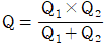
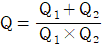
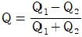
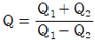
(정답률: 알수없음)
5과목: 철도보선관계법규
81. 철도차량의 운행에 지장을 초래하는 것으로서 철도사고에 해당되지 아니하는 것을 무엇이라 하는가?
- 사상사고
- 충돌사고
- 운행장애
- 열차장애
(정답률: 알수없음)
82. 일반철도에서 일반적으로 선로우측에 설치하여야 하는 것은?
- km표
- 구배표
- 관할경계표
- 곡선표
(정답률: 알수없음)
83. 철도건널목 신설시 충족조건에 관한 설명으로 옳지 않은 것은?
- 인접 건널목과의 거리는 1000m 이상으로 한다.
- 건널목 최소폭은 3m 이상으로 한다.
- 철도선로와 접속도로의 교차각은 45도 이상으로 한다.
- 열차투시거리는 열차속도 100km/h 이상일 때 500m 이상 확보하여야 한다.
(정답률: 알수없음)
84. 레일 유간정리 작업에 대한 설명 중 옳지 않은 것은?
- 유간정리는 소정리, 중정리, 대정리로 구분한다.
- 이음매 유간정정 시기는 하기와 동기를 피하여 춘추에 시행하는 것이 좋다.
- 대정리는 상당한 연장에 걸쳐 레일을 대이동하여 유간을 근본적으로 정리하는 경우로서 유간정리 시행구간 전반을 표준유간으로 정리한다.
- 과대유간 또는 3개소 이상의 이음매가 연속하여 유간이 없을 때는 서둘러서 유간정정을 하여야 한다.
(정답률: 알수없음)
85. 인력에 의한 분기기틀림 점검시 궤간, 수평, 면맞춤, 줄맞춤 모두를 측정하여야 하는 위치로 옳게 짝지어진 것은?
- 포인트 이음매, 가드부 직·곡선 1/2
- 포인트 청단, 리드부 직·곡선 1/2
- 리드부 직·곡선 1/2, 크로싱 노스부
- 크로싱 전단, 포인트 이음매
(정답률: 알수없음)
86. 도시철도에서 확대궤간 및 궤간의 공차를 합하여 초과할 수 없는 최대 궤간은?
- 1,435mm
- 1,460mm
- 1,465mm
- 1,470mm
(정답률: 알수없음)
87. 레일용접에 대한 설명으로 옳지 않은 것은?
- 용접하는 레일의 길이는 10m 이상의 것을 원칙으로 한다.
- 레일마모의 끝닳음 부분은 충분히 절단한 후 용접하여야한다.
- 68mm 테르밋 용접을 시행한 개소에 재용접을 시행할 경우 용접부의 절단길이는 100mm 이상이어야 한다.
- 살부치기 용접은 레일 및 크로싱의 일부 마모 및 결함으로 인하여 열차운행 및 선로보수에 지장이 있어 필요하다고 인정되는 곳에 시행하여야 한다.
(정답률: 알수없음)
88. 철도차량운전면허 없이 운전할 수 있는 경우로 옳지 않은 것은?
- 운전면허시험을 치르기 위하여 철도차량을 운전하는 경우
- 철도차량 정비시 공장 안의 선로에서 운전하여 이동하는 경우
- 교육훈련담당자 부재시 운전실무 실습을 위해 철도차량을 운전하는 경우
- 철도사고 복구시 열차운행이 중지된 선로에서 복구용 특수차량을 운전하여 이동하는 경우
(정답률: 알수없음)
89. 본선의 인접한 두 원곡선이 접속하는 곳에서는 완화곡선을 두어야 하나 완화곡선을 두지 않고 두 원곡선을 직접 연결하거나 중간직선을 두어 연결할 수 있다. 이때 중간직선이 있는 경우, 설계속도 100<V[km/h]≤200 인 경우의 중간직선 길이 기준값[m]은?
- 0.1V
- 0.2V
- 0.25V
- 0.3V
(정답률: 알수없음)
90. 정척레일을 인력으로 교환할 때에 대한 설명으로 옳지 않은 것은?
- 레일밀링방지장치는 사전에 철거하여야 한다.
- 스파이크는 일단 뽑아 올렸다가 다시 박아 놓는다.
- 곡선부에서는 필요에 따라 레일을 구부린다.
- 신구레일 단면이 상이할 경우 다지기를 철저히 하여 단차가 발생치 않도록 하여야 한다.
(정답률: 알수없음)
91. PC침목 교환작업(인력)에서 다음 중 가장 늦게 이루어지는 작업은?
- 체결장치 해체 철거
- 신침목의 삽입
- 침목 직각틀림 정정
- 신침목의 체결
(정답률: 알수없음)
92. 레일용접 후 연맞춤의 틀링값은 신품레일과, 헌레일에 대하여 각각 얼마 이내이어야 하는가?
- 신품레일 +0.3mm -0.1mm, 헌레일 +0.5mm -0.2mm
- 신품레일 +0.3mm -0.1mm, 헌레일 +0.5mm -0.3mm
- 신품레일 ±0.4mm, 헌레일 ±0.5mm
- 신품레일 +0.4mm -0.1mm, 헌레일 ±0.5mm
(정답률: 알수없음)
93. 일반철도에서 곡선구간의 궤도에 설치되는 최대 슬랙의 치수는?
- 25mm
- 30mm
- 40mm
- 45mm
(정답률: 알수없음)
94. 고속철도에서 일반(노천)구간의 장대레일 설정온도표준으로 옳은 것은?
- 23±3℃
- 25±3℃
- 28±3℃
- 31±3℃
(정답률: 알수없음)
95. 도시철도에 설치하는 제연설비 충 전동기⋅배풍기⋅배출풍도⋅배풍막이 정상으로 기능을 발하여야 하는 기준은?
- 섭씨 250도에서 30분 이상 기능 유지
- 섭씨 250도에서 1시간 이상 기능 유지
- 섭씨 500도에서 30분 이상 기능 유지
- 섭씨 500도에서 1시간 이상 기능 유지
(정답률: 알수없음)
96. 일반철도에서 전차대의 길이 기준으로 옳은 것은?
- 17m이상
- 23m 이상
- 27m 이상
- 32m 이상
(정답률: 알수없음)
97. 궤도재료점검에서 레일점검의 종류에 해당되지 않는 것은?
- 외관점검
- 해체점검
- 초음파 탐상 점검
- 궤도검측차 점검
(정답률: 알수없음)
98. 분기기 부설 작업에 대한 설명으로 옳지 않은 것은?
- 기본선 궤간중심선과 분기선 궤간중심선의 교점, 크로싱 및 포인트의 위치를 정확히 선정하여야 한다.
- 분기기의 조립은 분기측을 조립한 다음 직선측의 주레일, 가드레일, 크로싱 및 리드레일을 조립하여야 한다.
- 침목은 분기기 정규도면 치수에 따라 번호별로 간격을 맞추어 배열하되 직선쪽 침목 한쪽 끝을 맞추어야 한다.
- 분기기 전후에는 동일한 레일을 사용하여야 한다.
(정답률: 알수없음)
99. 교량침목을 사용하는 교량으로서 교상가드레일을 부설하여야 하는 경우가 아닌 것은?
- 전장 10m의 교량
- 10‰이상 구배 중 또는 종곡선 중에 있는 교량
- 열차 진입하는 쪽에 반경 500m의 곡선이 인접되어 있는 교량
- 곡선 중에 있는 교량
(정답률: 알수없음)
100. 고속철도 선로에서 궤도가 안정된 후에 확보하여야 할 도상횡저항력의 기준은?
- 500kg/m 이상
- 700kg/m 이상
- 800kg/m 이상
- 900kg/m 이상
(정답률: 알수없음)